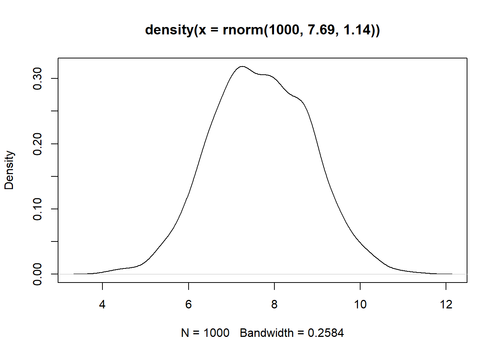
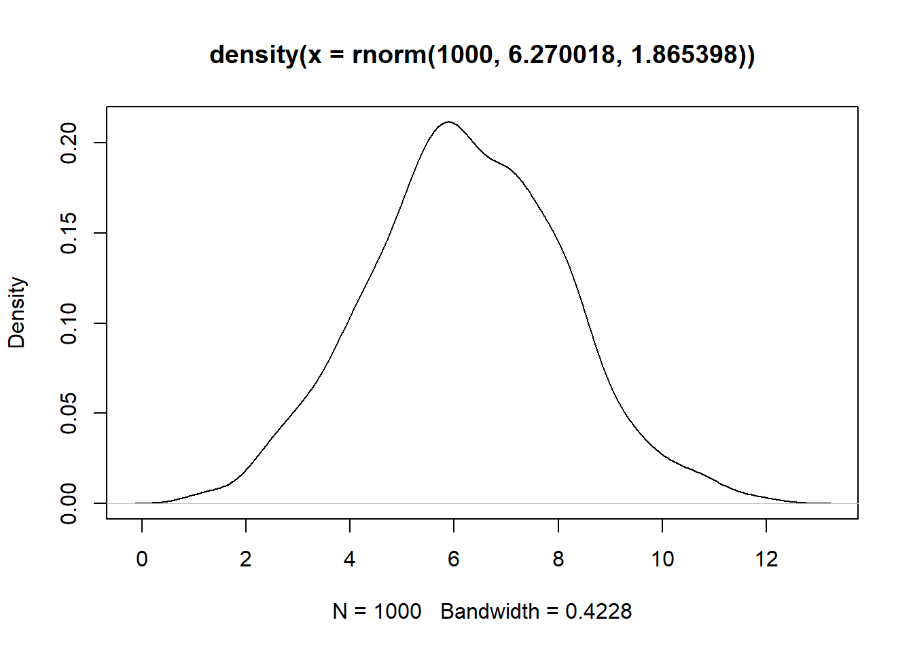
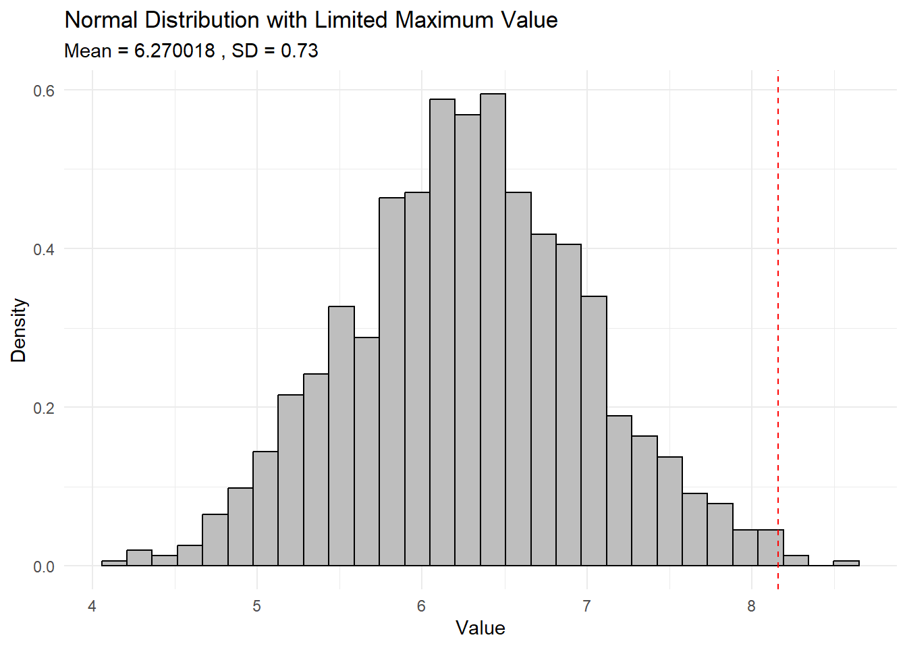
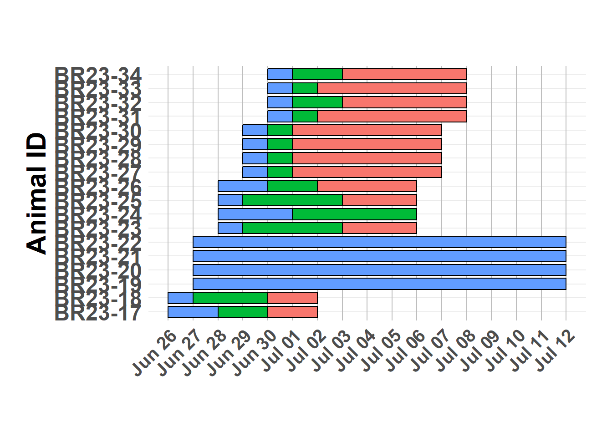

ABM Calibration
Finding values for ABM simulation.
Libraries
Custom Functions
[1] 15000 15600 14400Read Data
[1] "2023-06-26"[1] 168 14Simple stats
Start of clinical presentation
Hide code
first_score_gt_0 <- antem_df %>%
filter(score > 0) %>%
group_by(animal) %>%
slice_min(dpe) %>%
ungroup()
summary_stats_first_gt_0 <- first_score_gt_0 %>%
summarise(
avg_nasal = mean(nasal, na.rm = TRUE),
sd_nasal = sd(nasal, na.rm = TRUE),
avg_serum = mean(serum, na.rm = TRUE),
sd_serum = sd(serum, na.rm = TRUE)
)
summary_stats_first_gt_0| avg_nasal | sd_nasal | avg_serum | sd_serum |
|---|---|---|---|
| 7.687973 | 1.142453 | 6.829318 | 0.9029465 |
Hide code
plot(density(rnorm(1000, 7.69, 1.14)))
Start of clinical presentation
Hide code
first_grp2_transm <- antem_df %>%
filter(group == "donor",
dpi >= 2 & dpi <=3)
first_grp2_transm| animal | group | date | dpi | dpe | nasal | serum | score | temp | hpdi | hpe | exp_type | fever | censor_status |
|---|---|---|---|---|---|---|---|---|---|---|---|---|---|
| BR23-17 | donor | 2023-06-28 | 2 | 2 | 3.706999 | 6.014235 | 0 | NA | 48 | 48 | inoc | NA | 1 |
| BR23-17 | donor | 2023-06-29 | 3 | 3 | 8.158363 | 7.253855 | 0 | NA | 72 | 72 | inoc | NA | 1 |
| BR23-18 | donor | 2023-06-28 | 2 | 2 | 6.411625 | 45.000000 | 0 | NA | 48 | 48 | inoc | NA | 1 |
| BR23-18 | donor | 2023-06-29 | 3 | 3 | 6.803084 | 5.791815 | 0 | NA | 72 | 72 | inoc | NA | 1 |
Hide code
mean(first_grp2_transm$nasal)[1] 6.270018Hide code
sd(first_grp2_transm$nasal)[1] 1.865398Hide code
plot(density(rnorm(1000, 6.270018, 1.865398)))
Hide code
mean_value <- 6.270018
max_value <- 8.16
confidence_level <- 0.99
z_score <- qnorm((1 + confidence_level) / 2) # Get the z-score
# Calculate the standard deviation
sd_value <- (max_value - mean_value) / z_score
cat("Calculated standard deviation:", sd_value, "\n")Calculated standard deviation: 0.7337373 Hide code
# Generate random data based on calculated sd
set.seed(123) # For reproducibility
data <- rnorm(1000, mean = mean_value, sd = sd_value)
# Plot the distribution
library(ggplot2)
ggplot(data.frame(x = data), aes(x)) +
geom_histogram(aes(y = ..density..), bins = 30, color = "black", fill = "gray") +
geom_vline(xintercept = max_value, linetype = "dashed", color = "red") +
labs(title = "Normal Distribution with Limited Maximum Value",
subtitle = paste("Mean =", mean_value, ", SD =", round(sd_value, 2)),
x = "Value",
y = "Density") +
theme_minimal()Warning: The dot-dot notation (`..density..`) was deprecated in ggplot2 3.4.0.
ℹ Please use `after_stat(density)` instead.
Empirical duration
Hide code
head(antem_df)| animal | group | date | dpi | dpe | nasal | serum | score | temp | hpdi | hpe | exp_type | fever | censor_status |
|---|---|---|---|---|---|---|---|---|---|---|---|---|---|
| BR23-17 | donor | 2023-06-26 | 0 | 0 | 45.000000 | 45.000000 | 0 | NA | 0 | 0 | inoc | NA | 1 |
| BR23-17 | donor | 2023-06-27 | 1 | 1 | 45.000000 | 45.000000 | 0 | NA | 24 | 24 | inoc | NA | 1 |
| BR23-17 | donor | 2023-06-28 | 2 | 2 | 3.706999 | 6.014235 | 0 | NA | 48 | 48 | inoc | NA | 1 |
| BR23-17 | donor | 2023-06-29 | 3 | 3 | 8.158363 | 7.253855 | 0 | NA | 72 | 72 | inoc | NA | 1 |
| BR23-17 | donor | 2023-06-30 | 4 | 4 | 9.513642 | 7.476275 | 3 | NA | 96 | 96 | inoc | NA | 1 |
| BR23-17 | donor | 2023-07-01 | 5 | 5 | 9.077699 | 4.311981 | 5 | NA | 120 | 120 | inoc | NA | 1 |
Hide code
emp_incub <- antem_df %>%
filter(score > 0,
group != "Group 1") %>%
group_by(animal) %>%
summarise(duration = min(dpe))
emp_incub| animal | duration |
|---|---|
| BR23-17 | 4 |
| BR23-18 | 4 |
| BR23-23 | 5 |
| BR23-25 | 5 |
| BR23-26 | 4 |
| BR23-27 | 2 |
| BR23-28 | 2 |
| BR23-29 | 2 |
| BR23-30 | 2 |
| BR23-31 | 2 |
| BR23-32 | 3 |
| BR23-33 | 2 |
| BR23-34 | 3 |
dpe 0 loads
Hide code
emp_incub <- antem_df %>%
filter(score > 0 | group == "Group 1" & dpe == 0) %>%
group_by(group, animal) %>%
summarise(incubation = min(dpe)) `summarise()` has grouped output by 'group'. You can override using the
`.groups` argument.Hide code
corresponding_donors <- antem_df %>%
filter(group == "donor") %>%
mutate(nasal = if_else(nasal == 45, 0, nasal),
serum = if_else(serum == 45, 0, serum)
) %>%
group_by(dpe) %>%
summarise(
mean_nasal = mean(nasal, na.rm = TRUE),
sd_nasal = sd(nasal, na.rm = TRUE),
mean_serum = mean(serum, na.rm = TRUE),
sd_serum = sd(serum, na.rm = TRUE)
) %>%
filter(dpe <= 4) %>%
mutate(group = if_else(dpe == 0, "donor",
paste("Group", dpe)))
comb_df <- left_join(emp_incub, corresponding_donors, by = "group")
comb_df <- comb_df %>%
select(animal, group, dpe, incubation, mean_nasal, sd_nasal, mean_serum, sd_serum)
comb_df| animal | group | dpe | incubation | mean_nasal | sd_nasal | mean_serum | sd_serum |
|---|---|---|---|---|---|---|---|
| BR23-19 | Group 1 | 1 | 0 | 2.903322 | 4.1059166 | 0.000000 | 0.0000000 |
| BR23-20 | Group 1 | 1 | 0 | 2.903322 | 4.1059166 | 0.000000 | 0.0000000 |
| BR23-21 | Group 1 | 1 | 0 | 2.903322 | 4.1059166 | 0.000000 | 0.0000000 |
| BR23-22 | Group 1 | 1 | 0 | 2.903322 | 4.1059166 | 0.000000 | 0.0000000 |
| BR23-23 | Group 2 | 2 | 5 | 5.059312 | 1.9124596 | 3.007117 | 4.2527063 |
| BR23-25 | Group 2 | 2 | 5 | 5.059312 | 1.9124596 | 3.007117 | 4.2527063 |
| BR23-26 | Group 2 | 2 | 4 | 5.059312 | 1.9124596 | 3.007117 | 4.2527063 |
| BR23-27 | Group 3 | 3 | 2 | 7.480724 | 0.9583268 | 6.522835 | 1.0338186 |
| BR23-28 | Group 3 | 3 | 2 | 7.480724 | 0.9583268 | 6.522835 | 1.0338186 |
| BR23-29 | Group 3 | 3 | 2 | 7.480724 | 0.9583268 | 6.522835 | 1.0338186 |
| BR23-30 | Group 3 | 3 | 2 | 7.480724 | 0.9583268 | 6.522835 | 1.0338186 |
| BR23-31 | Group 4 | 4 | 2 | 8.374852 | 1.6104923 | 7.130783 | 0.4885999 |
| BR23-32 | Group 4 | 4 | 3 | 8.374852 | 1.6104923 | 7.130783 | 0.4885999 |
| BR23-33 | Group 4 | 4 | 2 | 8.374852 | 1.6104923 | 7.130783 | 0.4885999 |
| BR23-34 | Group 4 | 4 | 3 | 8.374852 | 1.6104923 | 7.130783 | 0.4885999 |
| BR23-17 | donor | 0 | 4 | 0.000000 | 0.0000000 | 0.000000 | 0.0000000 |
| BR23-18 | donor | 0 | 4 | 0.000000 | 0.0000000 | 0.000000 | 0.0000000 |
Hide code
donor_df <- antem_df %>%
filter(group == "donor", dpe <= 5) %>%
select(group, animal, date, nasal)
other_groups_df <- antem_df %>%
filter(group != "donor", dpe <= 5) %>%
select(group, animal, date, nasal)
aligned_df <- other_groups_df %>%
left_join(donor_df %>% select(date, nasal) %>%
rename(donor_nasal = nasal),
by = "date", relationship = "many-to-many")
aligned_df$nasal[aligned_df$nasal == 45] = 0
aligned_df$donor_nasal[aligned_df$donor_nasal == 45] = 0
model <- lm(nasal ~ donor_nasal, data = aligned_df)
summary(model)
Call:
lm(formula = nasal ~ donor_nasal, data = aligned_df)
Residuals:
Min 1Q Median 3Q Max
-3.357 -2.580 -1.405 2.187 6.908
Coefficients:
Estimate Std. Error t value Pr(>|t|)
(Intercept) -2.0993 1.0014 -2.096 0.0383 *
donor_nasal 0.5735 0.1271 4.513 1.61e-05 ***
---
Signif. codes: 0 '***' 0.001 '**' 0.01 '*' 0.05 '.' 0.1 ' ' 1
Residual standard error: 2.944 on 110 degrees of freedom
(40 observations deleted due to missingness)
Multiple R-squared: 0.1562, Adjusted R-squared: 0.1486
F-statistic: 20.37 on 1 and 110 DF, p-value: 1.611e-05Hide code
comp_nasal <- antem_df %>%
filter(group != "Group 1", dpe <= 5) %>%
select(animal, dpe, nasal) %>%
mutate(nasal = if_else(nasal == 45, 0, nasal)) %>%
pivot_wider(names_from = animal, values_from = nasal)
donor_cor <- comp_nasal %>%
select(dpe, `BR23-17`, `BR23-18`)%>%
filter(dpe <= 5)
contact_cor <- comp_nasal %>%
filter(dpe <= 5) %>%
select(-c(dpe, `BR23-17`, -`BR23-18`))
mod_lm <- lm(contact_cor)
cor(comp_nasal$`BR23-17`, comp_nasal$`BR23-23`, use="pairwise.complete")[1] 0.3235205Hide code
nasal_lm <- lm(incubation ~ mean_nasal, comb_df)
summary(nasal_lm)
Call:
lm(formula = incubation ~ mean_nasal, data = comb_df)
Residuals:
Min 1Q Median 3Q Max
-2.3149 -0.4016 -0.3874 1.6510 2.6510
Coefficients:
Estimate Std. Error t value Pr(>|t|)
(Intercept) 2.26886 0.90106 2.518 0.0237 *
mean_nasal 0.01584 0.14982 0.106 0.9172
---
Signif. codes: 0 '***' 0.001 '**' 0.01 '*' 0.05 '.' 0.1 ' ' 1
Residual standard error: 1.748 on 15 degrees of freedom
Multiple R-squared: 0.0007451, Adjusted R-squared: -0.06587
F-statistic: 0.01118 on 1 and 15 DF, p-value: 0.9172Hide code
p1 <- ggplot(comb_df, aes(x = incubation, y = mean_nasal)) +
geom_point(color = "blue") +
geom_smooth(method = lm, se = FALSE, color = "red", linetype = "dashed") +
labs(title = "Linear model: Incubation vs Mean Nasal",
x = "Incubation Period",
y = "Mean Nasal Values") +
theme_minimal()
p2 <- ggplot(comb_df, aes(x = incubation, y = mean_serum)) +
geom_point(color = "green") +
geom_smooth(method = lm, se = FALSE, color = "purple", linetype = "dashed") +
labs(title = "Linear model: Incubation vs Mean Serum",
x = "Incubation Period",
y = "Mean Serum Values") +
theme_minimal()Observed
Hide code
dur_plt <- antem_df %>%
mutate(nasal = if_else(nasal == 45 | is.na(nasal), 0, nasal),
serum = if_else(serum == 45 | is.na(serum), 0, serum),
score = if_else(is.na(score), 0, score)) %>%
select(animal, date, nasal, serum, score)
dur_processed <- dur_plt %>%
group_by(animal) %>%
arrange(date) %>%
mutate(
uninfected_end = ifelse(any(nasal > 0), min(date[nasal > 0]), NA),
infected_end = ifelse(any(score > 0), min(date[score > 0]), NA),
period = case_when(
date < uninfected_end | is.na(uninfected_end) ~ "uninfected",
date >= uninfected_end & date < infected_end | is.na(infected_end) ~ "infected",
date >= infected_end ~ "clinical"
)) %>%
select(animal, date, period)
dur_long <- dur_processed %>%
group_by(animal, period) %>%
summarize(start_date = min(date), end_date = max(date), .groups = 'drop') %>%
arrange(animal, start_date) %>%
group_by(animal) %>%
mutate(animal_max_date = max(end_date)) %>%
ungroup() %>%
group_by(animal) %>%
mutate(next_start_date = lead(start_date),
adjusted_end_date = ifelse(is.na(next_start_date), animal_max_date + 1, next_start_date)) %>%
ungroup()
dur_long$adjusted_end_date <- as.Date(dur_long$adjusted_end_date, format = "%Y-%m-%d")
ggplot(data = dur_long, aes(y = animal, fill = period)) +
geom_rect(aes(xmin = start_date, xmax = adjusted_end_date, ymin = as.numeric(as.factor(animal)) - 0.4,
ymax = as.numeric(as.factor(animal)) + 0.4),
color = "black") +
scale_x_date(date_breaks = "1 day", date_labels = "%b %d") +
labs(title = " ", x = " ", y = "Animal ID", fill = "Period") +
theme_minimal() +
theme(
panel.grid.major.x = element_line(color = "gray", linewidth = 0.5),
panel.grid.minor.x = element_blank(),
plot.margin = unit(c(1,0.75,1,0.75),"cm"),
legend.direction = "horizontal",
legend.position = "none",
strip.text = element_blank(),
strip.background = element_blank(),
legend.key.size = unit(2,"line"),
legend.key.width = unit(3,"line"),
legend.text = element_text(size=16, face="bold"),
legend.title = element_text(size=18, face="bold"),
axis.title.x = element_text(size=18, face="bold"),
axis.title.y = element_text(size=22, face="bold"),
axis.text.x = element_text(face="bold", size=15, vjust=1, hjust=1, angle=45),
axis.text.y = element_text(size=18, face="bold"),
plot.title = element_text(size=22, face="bold")
)